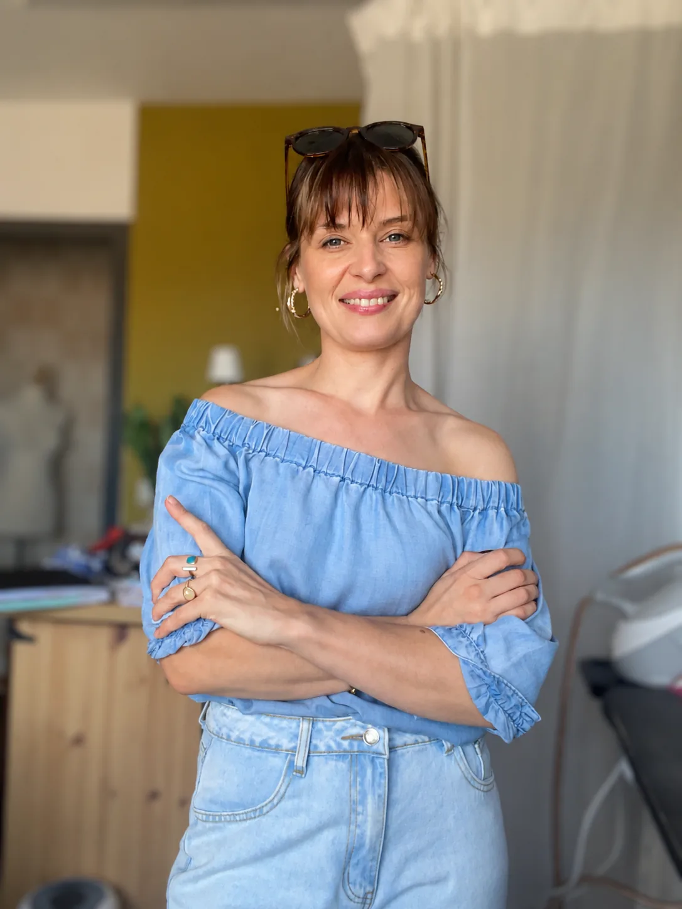
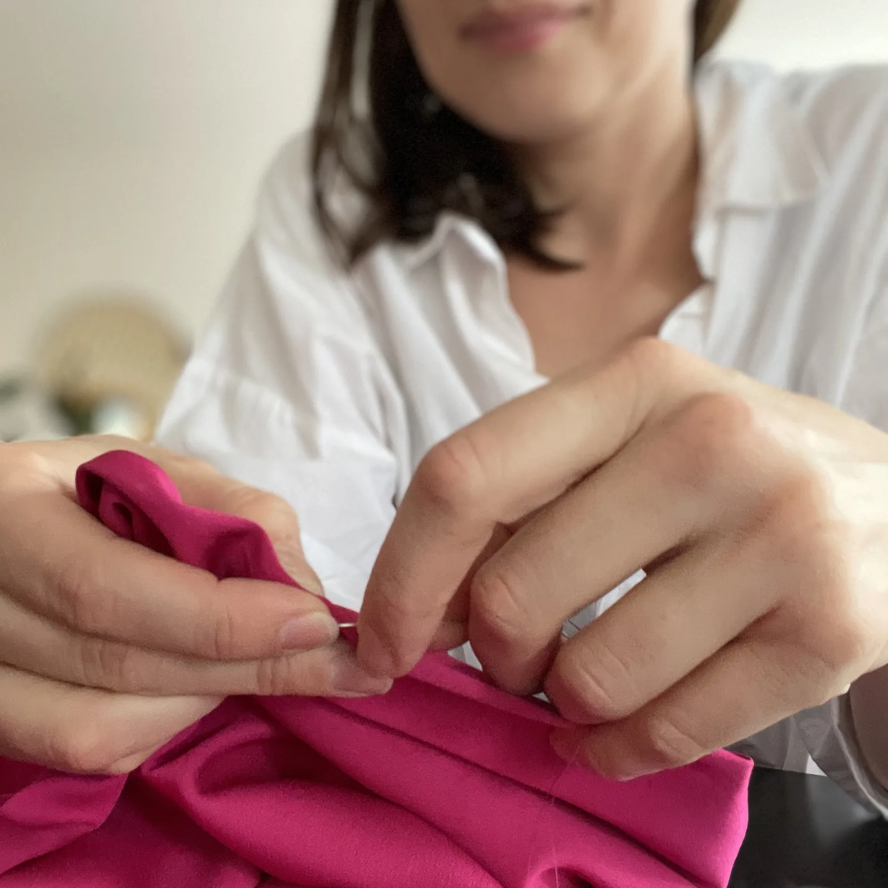
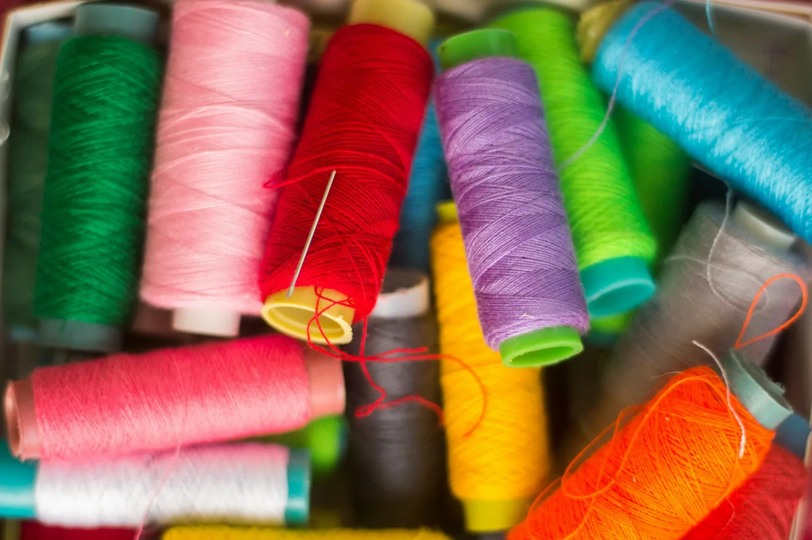
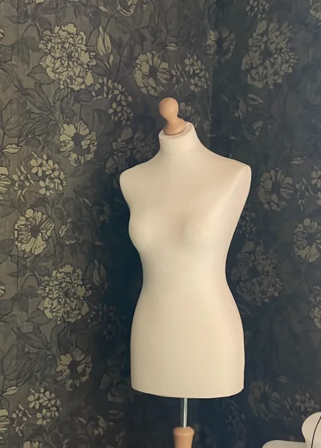

Past niet?Komt goed.
Broek te lang, jurk te ruim, rits kapot? Breng het binnen in de Kortrijksestraat. We bekijken samen wat het nodig heeft en ik maak het netjes in orde.
5,014 reviews op Google


Van zoom tot rits.
Een kleine herstelling of een grote aanpassing: ik zorg dat je kledingstuk weer zit zoals het hoort, met respect voor hoe het gemaakt is.
Retouches
Zodat het past- Broeken inkorten
- Jeans met originele zoom
- Taille en pijpen versmallen
- Jurken inkorten of innemen
- Mouwen inkorten
- Jassen en mantels
- Feestkleding
Herstellingen
Zodat het blijft- Scheuren
- Losgekomen naden
- Knopen
- Voeringen
- Ritsen vervangen
- Slijtage
Zo gaat het.
Geen gedoe. Je brengt het binnen, we bespreken het samen en je krijgt een berichtje als het klaar is.
- 1
Binnenbrengen
Je brengt je kledingstuk naar het atelier in de Kortrijksestraat.
- 2
Bespreken
We bekijken samen wat er moet gebeuren, zodat je weet wat je mag verwachten.
- 3
Retouche
Ik werk het zorgvuldig af, zo mooi en onzichtbaar mogelijk.
- 4
Ophalen
Je krijgt een berichtje zodra het klaar is.
Herstellen in plaats van vervangen.
Je favoriete jeans, die mantel die net iets te ruim zit, de jurk voor dat ene feest. Een goede retouche zorgt dat je ze weer met plezier draagt.
Dat is goed voor je portemonnee, en je lievelingsstuk gaat jaren langer mee. Van je jeans tot je feestjurk: elk stuk krijgt dezelfde zorg.



Wat klanten zeggen.
5,0uit 14 reviews op Google
"Heel warm en professioneel. Mijn mantel past nu perfect!"
"Vlotte en klantvriendelijke behandeling. Niets is te veel, altijd vriendelijk en behulpzaam. Het werk wordt kwalitatief uitgevoerd."
"Al verschillende retouches laten uitvoeren en telkens super tevreden ! Heel vriendelijk , heel correct ! Een aanrader !"
"Ik heb hier al meerdere broeken laten inleggen & ben elke keer opnieuw heel tevreden, zeker een aanrader!"
Het atelier
Kortrijksestraat 18 bus 2, 8020 Oostkamp. Je vindt me tussen Carrefour Express en Slagerij De Fruyt.
Openingsuren
- MaandagGesloten
- Dinsdag9 tot 19 uur
- Woensdag9 tot 11 uur
- Donderdag9 tot 19 uur
- Vrijdag9 tot 19 uur
- Zaterdag9 tot 11 uur
- ZondagGesloten
